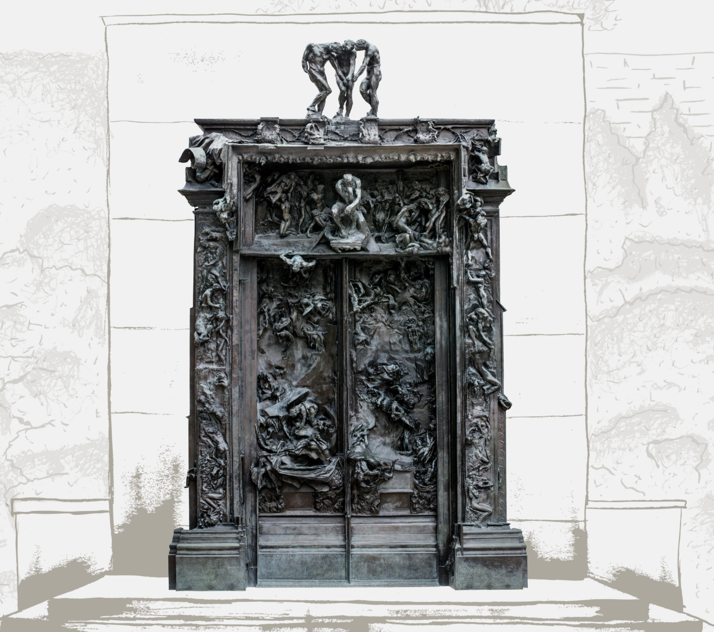

시청각장애인을 위한 촉각·음성 인터랙티브 전시: 침묵의 공명
모두를 위한 전시, 조각상을 만지다 — 손끝으로 완성하는 두 조각상의 대화, 반가사유상과 생각하는 사람.
눈을 넘어서 손끝과 귀로 완성하는 전시입니다. 국보 83호 금동미륵보살반가사유상과 로댕의 <생각하는 사람>을, 실물보다 작은 촉각 복제품과 촉각 및 음성 해설로 만나 보세요.
전시 일정 및 장소
9.10(목)–9.12(토) 2026 세계국가유산산업전 · 경주화백컨벤션센터
9.20(일)–9.21(월) 국회의원회관 2층 로비
왜 이 전시가 다른가
대부분의 박물관 전시는 '본다'는 것을 전제로 설계돼 있습니다. 이 전시는 반대로 시작합니다 — 시각장애인 방문객이 스크린리더 없이도, 동행 없이도 혼자서 끝까지 관람을 완결할 수 있도록, 촉각 복제 조각상·음성 내레이션·터치 기반 AI 챗봇을 중심에 두고 설계했습니다.
동양의 반가사유상과 서양의 <생각하는 사람>을 나란히 놓아, '힘든 마음'과 '따뜻한 마음'이라는 두 가지 태도를 비교하는 2개 전시실로 구성됩니다.
전시실 1 · 조우
로댕의 생각하는 사람과 반가사유상의 복제 청동 조각상(50cm 높이)을 두 손으로 직접 만지며 형태와 자세, 그리고 음성해설을 통해 의미를 먼저 파악합니다. 음성해설은 피라미드 구조를 이용해서, 전체를 먼저 파악한 다음 각 부위에 대한 상세 설명이 제공됩니다.
전시실 2 · 사유 및 체화
두 조각상(90cm 높이)의 부위(이마, 손, 발 등)를 손끝으로 짚으면 그 자리의 의미를 음성으로 들려주고, 궁금한 점은 AI 챗봇에게 자유롭게 물어볼 수 있습니다. 또한 조각상의 모습을 따라하며, 손끝을 넘어 온몸으로 작품을 체감합니다.
전시 기획/제작팀
전시 총괄 및 디지털 인터랙션 — 조준동 (성균관대 명예교수)
청동 복제품 제작 및 전시 준비 — 김호용 (Wipco 대표)
장애인 접근성 — 육근해 (장애인문화접근성연구소 대표)
접근성 특징
WCAG 2.1 AA 준수 — 웹 접근성 국제 표준을 준수해 설계됐습니다.
스크린리더 완벽 지원 — TalkBack·VoiceOver를 지원해 모든 화면 정보를 음성으로 안내합니다.
실물 촉각 복제품 — 물리적 촉각 조각상과 모바일 음성 안내가 실시간으로 함께 진행됩니다.
AI 음성 대화 — 궁금한 점을 자유롭게 묻고 답을 들을 수 있는 AI 챗봇을 탑재했습니다.
작품명 — 《침묵의 공명 — 조우 (만나기)》
이 전시는 두 개의 조각상, 금동미륵보살반가사유상과 로댕의 <생각하는 사람>을 나란히 놓아 '힘든 마음'과 '따뜻한 마음'이라는 두 가지 태도를 비교합니다. 반가사유상은 부드러운 곡선으로 괴로운 마음을 내려놓은 편안함을, <생각하는 사람>은 긴장한 근육으로 사람이 살아가며 짊어진 무거운 마음을 표현합니다. 두 조각상 모두 고개를 숙이고 손을 얼굴 가까이 둔 자세로, 이는 사유와 명상을 상징하는 공통된 조형 언어입니다.
금동미륵보살반가사유상 (金銅彌勒菩薩半跏思惟像)
삼국시대(6~7세기)에 제작된 것으로 추정되는 불교 조각으로, 미래에 중생을 구제할 미륵보살이 깊은 사유에 잠긴 모습을 표현합니다. 오른발을 왼쪽 무릎에 얹은 반가좌 자세와, 뺨에 살짝 댄 손가락이 특징입니다. 국립중앙박물관이 소장한 대표적인 두 점은 각각 국보 제78호와 제83호로 지정됐었으며, 지금은 지정번호 없이 '국보'로만 표기합니다.
금동미륵보살반가사유상 — 제작자 미상
삼국시대 장인의 손에서 태어난 것으로 추정될 뿐, 개별 작가의 이름은 전해지지 않습니다.
<생각하는 사람> (Le Penseur)
프랑스 조각가 오귀스트 로댕이 1880년경 <지옥의 문> 상단부 인물로 처음 제작했으며, 1904년 독립된 대형 청동상으로 다시 제작되었습니다. 근육의 긴장과 웅크린 자세로 사람이 살면서 겪는 힘든 마음을 표현한 근대 조각의 대표작입니다.

. 상단 중앙에 <생각하는 사람>이 앉아 있고, 문 전체에 지옥에서 고통받는 인간 군상 200여 점이 뒤엉켜 있다.">오귀스트 로댕 (Auguste Rodin, 1840~1917)
프랑스의 조각가. <칼레의 시민>, <지옥의 문> 등을 남겼으며, 인체의 사실적 표현과 표면의 거친 질감으로 근대 조각의 새 장을 열었다고 평가받는다.
조준동 (趙浚東)
기획·연출 · 성균관대학교 전자전기공학부 명예교수
학력 — 성균관대학교 전자공학 학사, New York (Poly) University 컴퓨터과학 석사, 노스웨스턴 대학교(Northwestern University) 컴퓨터과학 박사
주요 경력 — 성균관대학교 일반대학원 휴먼ICT융합학과 창설
주요 관심사 — 인간-컴퓨터 상호작용(HCI), UX 디자인, 멀티모달 인터페이스 개발. 인문학·예술·기술을 결합한 '휴마트올로지(Humartology)'라는 개념을 창안하여, 기술과 예술을 접목한 디지털 인터랙티브 아트 작품을 제작하고 있습니다.
Human + Art + Technology의 융합을 뜻하는 휴마톨로지 철학을 바탕으로, 장애와 비장애의 경계를 허물고 모두가 평등하게 천년의 사유에 접속할 수 있는 접근성의 미학을 구현합니다.
스크린 앞 의자에 앉아 "시작할게요"를 누르면 내레이션이 시작됩니다(누르지 않아도 1분 뒤 자동으로 시작됩니다). 손이 닿는 곳의 조각상 복제품(로댕과 반가사유상 모두 실물보다 작은 크기)을 이야기를 들으며 편하게 만져보세요.
화면 아래 뒤로 버튼으로 방금 들은 설명을 다시 들을 수 있고, 다음 버튼을 누르거나 자막이 떠 있는 화면 아무 곳이나 가볍게 두드리면 다음 단계로 넘어갑니다.
같은 화면 위에서 전체 구도 소개부터 각 부위의 세부 설명까지 이어서 들려드립니다.
저작권 안내
© 2026 조준동 · Humartology Lab. All rights reserved.
금동미륵보살반가사유상 원본 소장: 국립중앙박물관
생각하는 사람 © Auguste Rodin (공개 저작물)
[22] H. Kim, Pensive bodhisattvas, Smarthistory, https://smarthistory.org/pensive-bodhisattvas/ (accessed 29 July 2026).
[26] S.Y. Hwang, Baekje-banga-sayusang-sogo [백제반가사유상소고], in: Han'guk Bulsang-ui Yeon'gu [한국불상의 연구], 1973.
[27] B. Vujanović, Rethinking Rodin's Thinker, Decorative Arts Society Journal 43 (2019) 61–71.
[34] Musée Rodin, The Gates of Hell, collection notice, meudon.musee-rodin.fr, accessed 2026.
[35] Musée Rodin, The Thinker, collection notice, musee-rodin.fr, accessed 2026.
[36] W.B. Kang, Wonyung-gwa-Johwa [원융과 조화], Youlhwadang, Seoul, 1990.
[37] J.Y. Jeon, 「인류가 창조한 가장 빼어난 미소, 압도적인 깨달음」, 문화재사랑 2019년 1월호(통권 170호), 문화재청.
로댕의 '생각하는 사람'과 국보 '반가사유상'의 만남.
'고뇌'에서 '자비'로 이어지는 울림을 체험해보세요.
몸을 통과하지 않은 사유는, 아직 사유가 아닙니다.